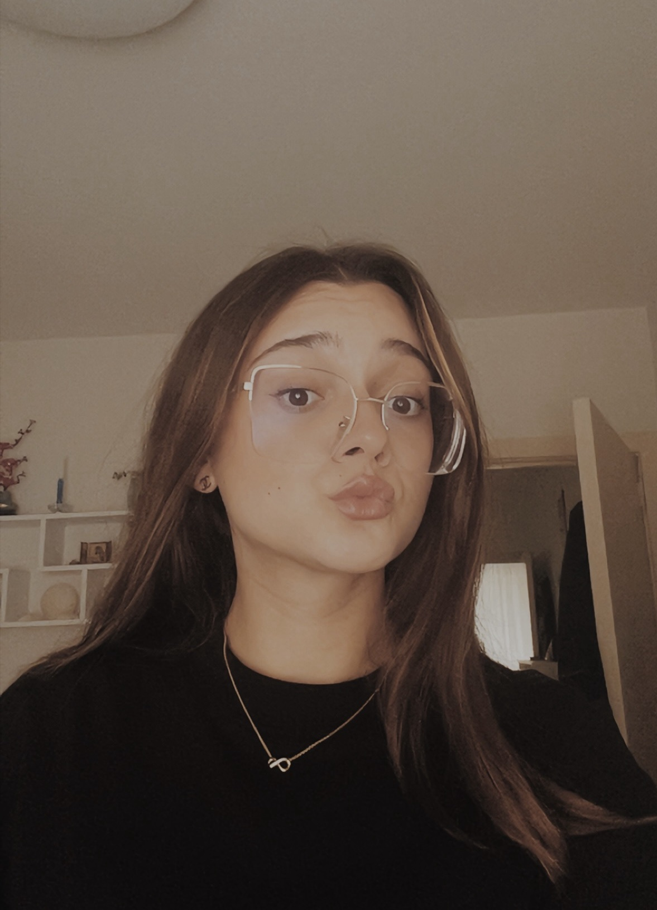
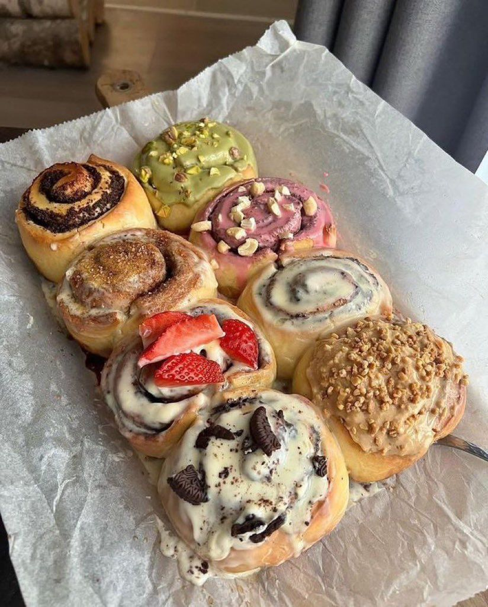
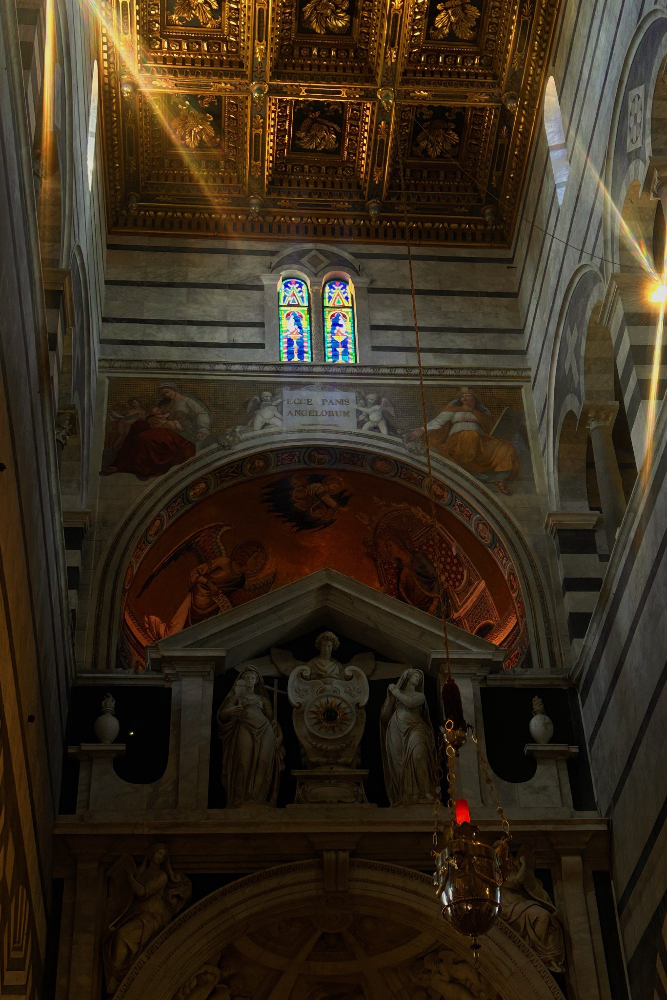
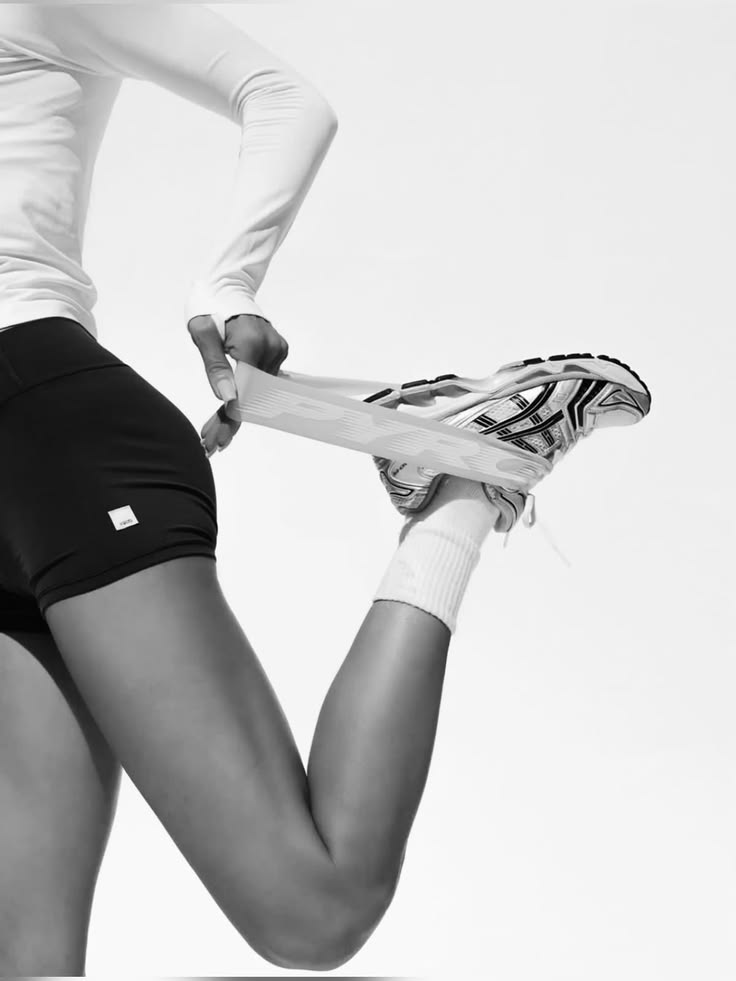
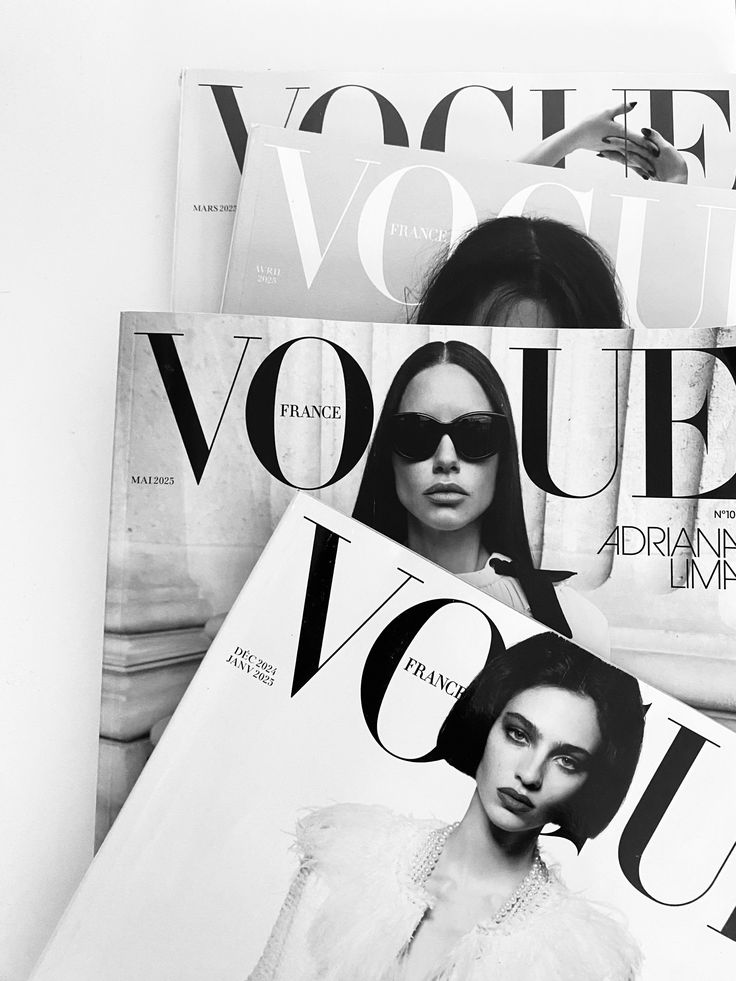
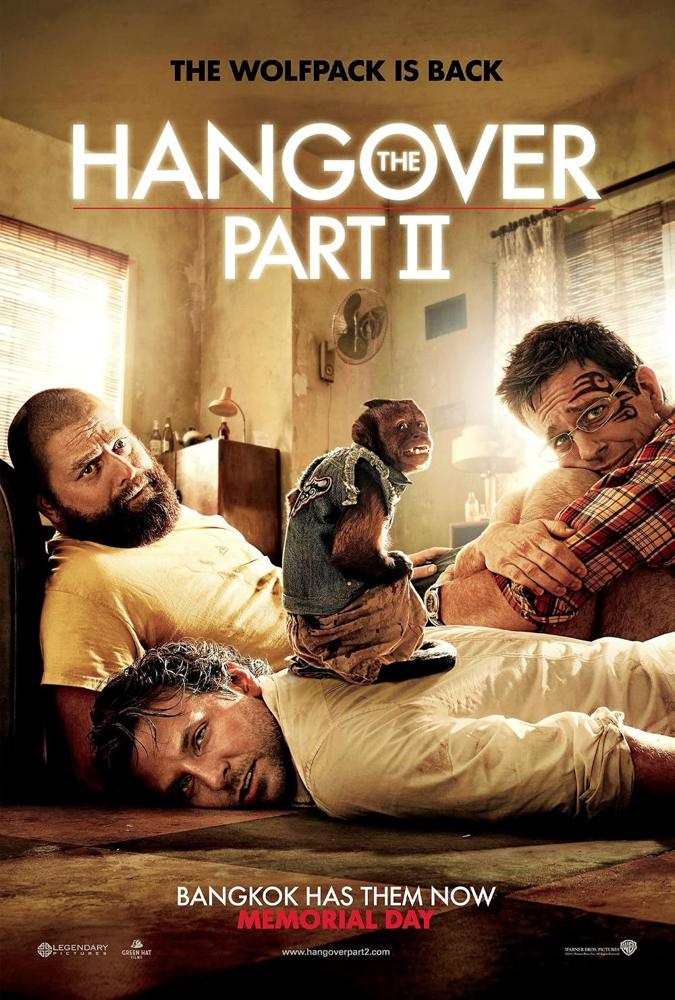

Makeup

Ik volg graag de nieuwste make-uptrends en producten. Klik op de foto voor mijn favoriete winkel.
Volledige naam: Daria Elisabeta Tasnadi
Adres: Koffiestraat 777, 8900 Kortrijk
Telefoonnummer: 0465 26 27 30
E-mailadres: daria.tasnadielisabeta@student.vives.be


Ik bak graag taarten en cupcakes, het liefst met verrassende smaakcombinaties. Klik op de foto voor mijn favoriete baksite.

IMet mijn camera leg ik graag de bijzondere momenten en ontmoetingen van mijn reizen vast. Klik op de foto voor mijn inspiratiebron.

Enkele keren per week ga ik lopen, met als doel ooit een halve marathon te lopen. Klik op de foto om mijn looproutes te bekijken.
Ik volg graag de nieuwste make-uptrends en producten. Klik op de foto voor mijn favoriete winkel.

Mode-inspiratie haal ik het liefst uit magazines en modeshows. Klik op de foto voor mijn favoriete modetijdschrift.

Mijn favoriete film is The Hangover. Klik op de poster voor meer info op IMDb.
| Naam | Web Development | Computer Systems | Fundamentals of programming |
|---|---|---|---|
| Daria | 16 | 15 | 17 |
| Cara | 14 | 13 | 15 |
| Evelien | 17 | 16 | 18 |
| Milan | 15 | 14 | 16 |